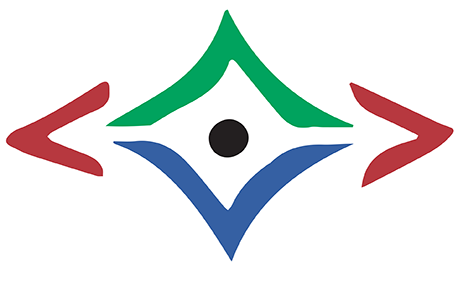

About Us
We use
creativity to supercharge critical and analytical thinking
to uncover fresh solutions and implement new ideas
It's the kind of thinking that makes people more energised, positive, adaptive and resilient for change. The power of the approach is that it simultaneously addresses creativity, novel strategies, behavioural and people issues, and focussed innovation to deliver practical implementation.
We work with a team whose diverse skills and backgrounds enable us to work locally, internationally, in-person or on-line and across multiple industries.
SynNovation is unique, highly participative and very practical. It is based on the Synectics approach developed in the United States in the late 1950s, and used internationally to achieve on-going innovation and improved performance. We have used it in South Africa since 1995, adapting and enriching it for use in the 21st century African context, and internationally. It promotes success in businesses of all sizes, in all industries, in the public sector, in education and in communities.
The company is headquartered in South Africa, with a presence in Cape Town, Johannesburg as well as in Perth, Australia.
Our Logo
Our Logo is inspired by a picture in a booklet on African Symbols of Goodwill, by the African healer and sage, Credo Mutwa, showing the symbol for Communication.
Credo Mutwa symbol for communication
- At the top, two human mouths face each other, one on either side of a star.
- This symbolises the creativity born between two human beings when they talk.
- The full moon shining below the water, shows the healing power of dialogue, and is flanked by symbols of growth.
SynNovation Logo

- The mouths on both sides represent open, face-to-face communication and the active participation needed to achieve creativity together.
- The top triangle represents the first part of our innovation process opening up a task, and generating many creative, novel ideas - green for growing the possibilities.
- The bottom triangle in blue, for rationality, represents developing and refining selected unusual ideas, to make them feasible so they can be turned into practical action plans.
- The black centre point integrates it all into the 'sweet spot' of focussed and profitable innovation.
Our Team
Truida Prekel
The more people work with the SynNovation tools, ground-rules and behaviours, the more these become a way of life. These positive habits enrich individuals, and also benefit others they meet.
Building understanding and positive approaches to human interactions underlie all the areas Truida has worked in for over forty years – people development, creative problem-solving, innovation and change management, and also intercultural understanding, gender and inclusivity.
Truida has had the benefit of playing and working with SynNovation since 1995 – yet she still regularly gains new insights on different ways in which we can use and strengthen the approach – often from participants. She loves sharing SynNovation with people of all ages, professions and backgrounds – and seeing how it unlocks productive fun, energy and excitement for them and for our team. She has worked in businesses of various sizes, government departments, in education and in communities and continues to play an active role in transformation in SA.
Truida was at UNISA Graduate School of Business Leadership for 17 years, first as manager of marketing and public relations, then lecturing in management for ten years. An independent consultant since 1988, she has published widely and guest-lectured at several universities. Truida holds a BA from Stellenbosch University and a Master of Business Leadership from UNISA.
Muimeleli Mutangwa
As an engineer with strong analytical problem-solving capabilities, SynNovation’s tools allow me to also effectively solve problems that require creative solutions. This skillset widens what I'm able to achieve personally and professionally.
Muimeleli is a Business Process Practitioner who is passionate about assisting emerging enterprises to become more efficient and sustainable by designing, re-engineering and optimising their business processes.
His national best-selling book, Before Varsity won the 2019 African Authors’ Award and the 2019 Gauteng Province Premier’s Education Excellence Award in the Skills Development category. He is also a founder of two small businesses: Tailor Cleanik, a chemical technology company that develops environmentally-friendly detergents and makes cleaning franchises available to unemployed youth; and Ink Matter, a company that publishes youth empowerment books by emerging authors and distributes them by partnering with organisations through youth empowerment programmes.
Muimeleli is an engaging SynNovation practitioner and innovation catalyst, with experience across multiple industries, from start-ups to academia and the not-for-profit sector. He completed his Masters in Sustainable Process Engineering at Wits University and is currently enrolled for his PhD.
Lu-Marié Sobey

SynNovation is at the heart of what I do, it has become a way of doing, a way of life and the way to relate to others. With creativity in the mix, work can be more fun than fun!
Lu-Marié has been an independent consultant and trainer in management systems and innovation since 1995. She is attracted to how innovative thinking can supercharge the concept of continuous improvement and how the SynNovation approach has proven to be much deeper than that; it subtly changes what people do, and how they behave and work together.
With a BSc Food Science, she started her career in the research laboratories of Nampak, the biggest packaging company in the southern hemisphere, and worked actively in the South African food industry until she relocated to Australia. In addition to her analytical scientific streak, she has a strong creative side. Her versatility and wide interests have resulted in a wide range of clients including universities, the food industry, pharma, retail, the mining industry and actuaries. She is a sought-after trainer, who was head-hunted to deliver training for Duke Corporate Education, consistently ranked top in management training for over 2 decades. To better understand creative thinking, she completed an international Diploma in Neuroleadership (Cum Laude) at University of Stellenbosch Business School.
Lu-Marié is passionate about sharing her knowledge and regularly presents at conferences and contributes to published articles and books.
Brian Ford
SynNovation makes it possible for me to bring my business and management experience together with my creativity, to work every day. This makes the daily grind very rewarding.
Brian Ford is an entrepreneur, with valuable experience in executive and general management, business development and project management.
After more than 25 years’ experience in the IT industry, predominantly in the Financial Services sector, Brian has joined the SynNovation team in 2015, mainly because of his fascination with innovation, and its power as a competitive advantage. While working on a PhD on this topic, he is also working with the team to expand the impact of SynNovation, to enhance performance in business, in government and in communities.
Brian holds a BCom (Hons) from the University of the Western Cape and an MBA from the University of Cape Town (Graduate School of Business). His thesis was on innovation and systems thinking as competitive advantages in business.
Melanie Burke
SynNovation connects us with our humanity and creativity, enabling us to form robust relationships and enhancing our collaborative and individual productivity.
Melanie is an award-winning social innovator and an experienced development practitioner who brings together the academic and practical knowledge required for impact entrepreneurship and societal change.
A former banker, Melanie has some 30 years' experience in the financial services and innovation fields and has experience in most areas of business. Melanie is recognised for her impact in diversity and inclusion work and currently focuses on transformation and innovative solutions for social development, growth and business support. Her expertise includes leadership development, team building, multi-stakeholder collaboration, innovation, technology, education, large-scale systems change and entrepreneurship. She has held leadership roles and board positions in a variety of sectors. Her discretion and sensitivity to the context in which she operates, is part of her appeal.
Her formal academic qualifications include an international Master of Business Administration (MBA) with an Information Technology specialisation as well as a Diversity Management Diploma from Wits Graduate School of Public Development Management and Project Management and Marketing diplomas from UNISA.
Helen Andrews
SynNovation has shown time and again that in assuming the best of people, they are likely to deliver on those expectations. Our ways of working deliver what I like to think of as an ‘optimistic' realism! I appreciate the techniques that help to select ideas and show how to practically bring them to life.
Helen is passionate about the power of collaboration to shift group dynamics, unlock fresh thinking and drive innovation within organisations. With a background in design, Helen is intuitive, resourceful and naturally creative. Having started her career working for Synectics Europe in 2008, her professional approach is grounded in the principles of collaborative creativity. Her recent focus has been in new product strategy, grounded in consumer insight.
Helen holds an Honours degree in Visual Communication from Stellenbosch University and as a creative entrepreneur, she finds inspiration (joy!) in designing and making jewellery for the local accessories company she founded in 2011. White Rabbit Days affords Helen the opportunity to venture ‘down the rabbit hole’ to uncover new perspectives and ways of addressing real-world, work and life challenges.
Currently an independent consultant, Helen is dedicated to inspiring people and organisations to harness insights and unlock creativity to uncover breakthrough solutions.
Albertus Louw
SynNovation enables me to use the lenses through which others and I see our worlds, to create collaborative solutions to real-world problems.
Albertus Louw is a film maker, TV presenter and independent consultant specialising in the fields of creativity, media as well as eco- and socially aligned solutions.
He is an esteemed producer/director, known for his stories about wildlife, especially relating to human relationships with the environment and solutions for the future. He is also often seen on national TV as studio and field presenter for 50|50, a well-known South African environmental TV show. He has received several accolades, including an SAB Environmental Media award, ATKV Mediaveertjie and International Tourism Film Festival Africa award.
Albertus has been involved with relief work in war-torn Northern Iraq and Sudan as well as at major natural disasters in Turkey, Iran and Indonesia. He has facilitated exercises on cultural orientation and sensitivity to various groups and service projects for young people in the UK, Europe, the Far East, Central Asia, the Middle-East, as well as North and Southern Africa. Albertus believes education is key to enabling people to think differently about our connection with the environment, and that stories about innovative solutions are one of the best ways to inspire change.
He pursues a lifestyle inspired by Circular Economy and Cradle to Cradle principles.
Angela Ho
While the new digital world and transformative technologies drive the way people work, the SynNovation principles of teamwork are critical to sustaining success.
Angela's wide range of business and facilitation experience makes her an asset to the SynNovation team. Twelve years of global corporate experience included roles from Key Account Management, to Supply Chain Management, to Public Affairs and Communications in Africa including Uganda, Kenya, Tanzania, Mozambique, Zimbabwe, Namibia and South Africa.
Angela's exposure to various facets of business has allowed her to appreciate the value of clear and consistent communication. The SynNovation ground rules and mind-set have changed how she thinks and speaks, and have opened opportunities for a new career in IT. A career break to prioritise her three daughters, offered experiences that have enriched her view of life and her value system of perseverance, respect, humility, integrity and humour in abundance.
Angela holds a BCom in Marketing and Entrepreneurship from the University of South Africa (UNISA); HIV/AIDS Counselling Certification; a Diploma in Project Management; and Performing Arts qualifications in Harp and Piano. Since 2015, Angela has been a Director of a South African home-grown software company.
SynNovation allows her to find joy in her everyday work, finding solutions in a collaborative and fun way, using creative problem-solving.